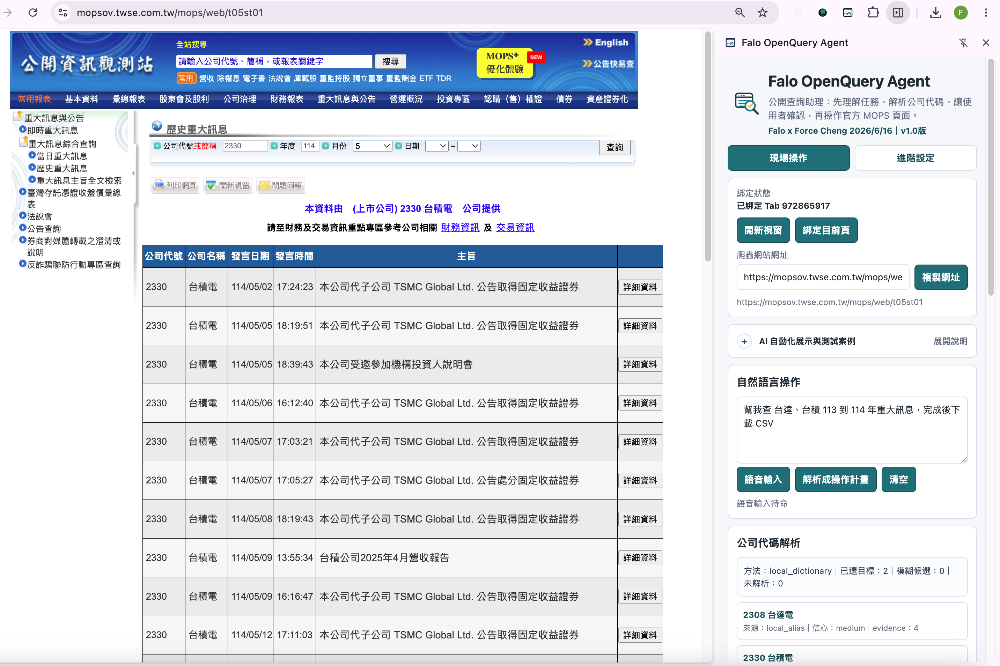

v1.0 草稿版｜RWD GitHub Pages 測試
怎麼透過口語化指令，運用強大的 AI 去抓取政府網站資料
這不是要取代公開資訊觀測站主網頁，而是一個教學案例：用 Vibe Coding 快速做出 Chrome 外掛，示範 AI 如何把「台積電今年五月資料」這類口語任務，轉成可確認、可修正、可輸出的 AI 爬蟲、HITL 人機協作與 ETL 流程。

操作介面與素材展示
{kind=link}
{kind=link}
這個測試想教什麼？
Vibe Coding 快速成形
用 AI 協作把需求、畫面、測試案例逐步寫成 Chrome 外掛，讓初學者看見「邊做邊校正」的開發方式。
AI 爬蟲不是只抓資料
AI 先解析自然語言、公司代號與時間範圍，再把公開網站查詢流程整理成可執行的操作計畫。
HITL 人機協作
AI 先提出理解，人類再確認或修正。欄位狀態會顯示哪些條件來自 AI，哪些已被手動覆寫。
用 ETL 看懂這個專案
Extract：取得資料與任務意圖
這一層負責把「人說的需求」與「政府公開介面的資料」抓進流程。
- 自然語言輸入：例如「台積電今年五月資料」。
- 政府公開網站：公開資訊觀測站 MOPS 查詢頁與歷史重大訊息結果。
- 公司名稱、簡稱、股票代碼對應表。
- Chrome 外掛綁定頁面、資料流模式與 Computer Use 模擬操作素材。
- 截圖、錄影、原始查詢畫面作為教學證據。
Transform：AI 解析與人類確認
這一層負責把模糊說法轉成可檢查、可修正、可執行的結構化條件。
- 公司名稱反查代碼與候選清單。
- 民國年、西元年、季度、月份、單數月份等時間解析。
- 自然語言轉 JSON-like 操作計畫。
- AI 理解欄位與人類手動覆寫欄位的狀態標示。
- 台北時間戳、成本估算與執行紀錄。
Load：輸出成可用成果
這一層負責把查詢結果整理成不同角色能使用的格式，而不只是停在爬蟲資料。
- CSV：適合快速匯入試算表與資料清理。
- Excel / 工作表概念：適合課堂整理、篩選、排序與人工覆核。
- JSON：適合工程串接、AI 再分析與保留結構。
- HTML 報告：適合人閱讀、交付與教學說明。
- HTML 互動查詢式：適合讓使用者自行篩選月份、排序欄位與檢視結果。
如何善用合適的 AI 模型
地端規則與小模型就能做很多
公司代號查表、月份判斷、民國年換算、固定欄位輸出，這些多半是規則明確的工作，不一定需要高級模型。
- 適合：字典查詢、格式轉換、欄位檢查、固定 JSON schema。
- 優點：成本低、速度快、可離線或少量連網。
- 教學重點：先把資料結構設計好，模型只負責補足模糊處。
雲端模型處理模糊語意
當使用者寫「去年第四季」「下半年單數月份」「台達」這種需要背景判斷的說法，雲端模型可以協助產生候選與解釋。
- 適合：公司名稱歧義、自然語言時間範圍、跨資料源確認。
- 做法：先讓 AI 解析，再顯示操作計畫給人確認。
- 成本觀念：短 prompt、固定 schema、少量輸出即可，不必一開始就用最高階模型。
高級模型留給高價值判斷
最高級模型適合用在需求拆解、教材設計、例外案例討論、跨系統流程規劃，而不是每一次欄位查詢都呼叫。
- 基礎查詢：地端規則或低成本模型。
- 模糊解析：中階雲端模型加 HITL 確認。
- 複雜設計：高階模型協助架構、教案與風險判斷。
電腦自動化的幾種模式
資料流 / API 模式
直接理解網站請求、資料結構與查詢參數，用較高效率取得結果。這是目前此 demo 主要採用的穩定方式。
- 適合：大量查詢、固定欄位、可重複下載。
- 優點：速度快、成本低、容易記錄執行時間與輸出格式。
- 限制：需要理解資料來源與公開介面的規則。
Chrome 外掛頁面操作
透過 Extension 綁定使用者開啟的頁面，讀取欄位、填入條件、整理結果，適合把公開網站變成教學型工作流程。
- 適合：政府網站、商業公開查詢介面、需要使用者授權的頁面。
- 優點：貼近真實瀏覽器環境，可保留畫面與操作證據。
- 限制：網站改版時需要重新檢查 selector 與流程。
Computer Use 模擬人操作
讓電腦像人一樣看畫面、輸入、點按鈕、捲動結果。它通常不是最高效，但很適合展示 AI 現在到未來的操作趨勢。
- 適合：沒有 API、頁面結構不穩、需要示範人類節奏的場景。
- 優點：直覺、可展示、讓非工程背景容易理解。
- 限制：速度較慢，穩定性與成本要靠 HITL 和流程設計控制。
資源包下載
Skyline AI Parser Demo 1 v1.0 草稿版
檔案：skyline_ai_parser_demo1_v1_draft_resource_pack.zip
SHA256：ba68e7341357b0a7e58c9745e4d5ab1eba8b5de445a743c410ec9310fae3676a
用途：課堂示範、GitHub Pages 測試、Chrome Extension 未封裝載入。
安裝方式
下載 ZIP 後解壓縮，找到 Chrome Extension 專案資料夾。
進入 chrome://extensions/，打開「開發人員模式」。
選擇解壓縮後的 chrome_extensions/public_query_agent 資料夾。
例如輸入：台積電 今年五月資料，觀察 AI 如何解析公司、年份與月份。
備註
公開頁負責介紹與下載
GitHub Pages 適合放介紹、教學、資源包下載、SEO / GEO / AI crawler metadata。
外掛負責實際操作
真正跨站填表、綁定頁面、讀回結果與匯出資料，仍由 Chrome Extension 在使用者授權後執行；這正是 AI 爬蟲與 HITL 示範的核心。
草稿版定位
v1.0 草稿版適合教學與測試，不是正式商用版本。使用者應自行確認公開資料來源與查詢結果。